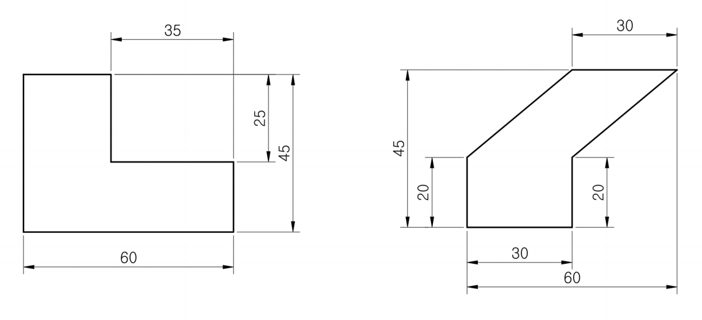
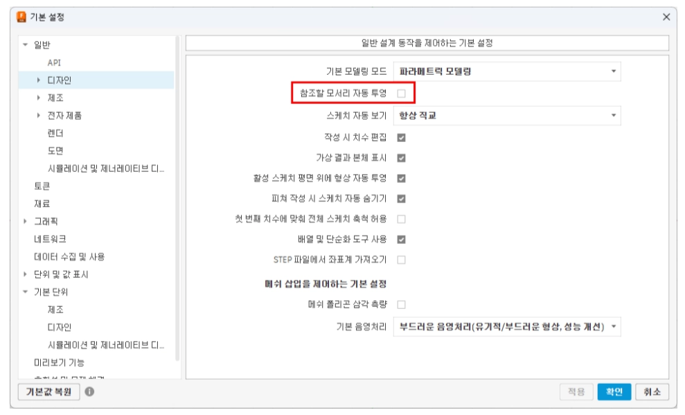

[17차시] 스케치와 모델링 기초
1. 기본 도형 실습
1.1. 기본 도형
1.1.1. 기본 도형 실습_01


1.1.2. 기본 도형 실습_02

1.2. 응용 도형

1.3. 형상 투영
1.3.1. 형상 투영과 스케치 공유
- 형상 투영이란 스케치 작업시 기존에 작성된 스케치 요소, 객체의 모서리, 꼭지점, 루프,
작업 피쳐 등 기타 스케치 형상을 현재 활성화된 스케치 평면으로 가져오는 기능임.
- 투영된 형상은 원래 형상과 연관되어 있으므로 원래 형상이 변경되면 투영된 형상도
변경됨.
- 스케치 작업시 참조가 필요한 모서리가 자동으로 투영되어 스케치를 편하게 구속시킬 수
있음.

1.3.2. 참조할 모서리 자동투영(옵션)
- 피쳐에 사용된 스케치는 해당 피쳐에 종속되어 숨겨지는데, 이 스케치를 공유하려면
브라우저에서 해당 스케치의 가시성을 켜서 사용하면 됨.


1.3.3. 스케치 공유와 가시성 켜기

2. 부품 모델링 실습
2.1. Fusion의 피처
- Fusion에서 부품을 모델링할 때 작업 피쳐, 스케치된 피쳐 및 배치된 피쳐와 같은 세 가지
유형의 부품 피쳐를 다루게 됨.
- 작업 피처는 참조 피처로 스케치에 투영하여 새 피처를 구성하는데 사용할 수 있는 평면,
축 및 점으로 구성됨.
- 스케치된 피처는 2D 스케치에서 시작된 피처로 프로파일을 돌출, 스윕, 회전 등 작업을
통해 작성된 볼륨임.
- 배치된 피처는 기존에 작성된 솔리드 형상을 참조해 추가할 수 있는 피처임. [예] 구멍(홀), 모따기(챔퍼), 모깎기(필렛), 쉘
2.2. 돌출(Extrude)
- 돌출 명령은 프로파일에 깊이를 추가하여 솔리드 본체 생성 또는 피처를 접합, 절단함.

2.3. 회전(Revolve)
- 프로파일을 축을 기준으로 회전하여 솔리드 본체 생성 또는 피처를 접합하거나 절단할 수 있음.

2.4. 구멍(Hole)
- 드릴 구멍, 탭, 카운터 보어, 카운터 싱크 등의 유형을 선택하여 부품에 지정된 구멍을 생성함.

2.5. 원형 패턴(Circular pattern)
- 작성된 피처나 솔리드를 중심 축을 기준으로 배열하는 명령임.

2.6. 나사산(Thread)
- 원통, 원추형의 내부 또는 외부 면에 음영 나사산을 생성함.

2.7. 기울기(Draft)
- 선택한 면에 기울기(테이퍼)를 적용하는 명령임.

2.8. 리브(Rib, 보강대)
- 열린 프로파일 또는 닫힌 프로파일을 사용하여 리브(보강대)를 생성함.

2.9. 모따기(Chamfer, 챔퍼)
- CAD나 엔지니어링 설계 도면에서는 모서리를 깎아내는 작업을 뜻함.
- 서리를 직각 빗면(경사)으로 깎아내는 것은 Chamfer(챔퍼/모따기), 모서리를 둥글게 곡면 처리하는 것은 Fillet(필렛/모깎기)이라고 부름.

2.10. 모깎기(Fillet, 필렛)
- 부품의 내부 또는 외부 모서리에 필렛 형상을 생성하는 명령임.

- 작업 평면을 추가하여 부품 모델링시 스케치 평면으로 활용할 수도 있음.

| 피처 유형 | 대표 예시 |
|---|---|
| 작업 피처 (Construct) | 간격띄우기 평면, 기울어진 평면, 축, 점 |
| 스케치된 피처 (Sketched) | 돌출(E), 회전, 스윕, 로프트, 리브 |
| 배치된 피처 (Placed) | 구멍(H), 모따기(챔퍼), 모깎기(F), 쉘, 기울기 |
✅ 17차시 핵심 단축키 & 점검표
| 단축키 | 명령어 | 핵심 용도 |
|---|---|---|
P | 형상 투영 (Project) | 기존 모서리·점을 현재 스케치로 투영 |
E | 돌출 (Extrude) | 2D 프로파일을 3D로 생성·접합·절단 |
H | 구멍 (Hole) | 단순·카운터보어·카운터싱크·탭 구멍 생성 |
F | 모깎기 (Fillet) | 모서리를 둥글게 곡면 처리 |
- 기본·응용 도형 스케치를 완전 구속(검은색 선)으로 완성했는가?
- 형상 투영(
P)과 브라우저 눈 아이콘(스케치 공유)을 직접 사용해 보았는가? - 모따기(Chamfer)와 모깎기(Fillet), 그리고 작업 평면 추가의 용도를 구분할 수 있는가?